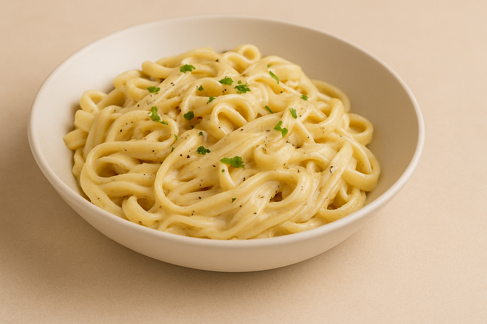

My Recipe Blog
Home
About

Creamy White Sauce Pasta
A quick,delicious pasta recipe
Ingrediants
Pasta
Milk
Butter
Cheese
Salt,pepeer
Instruction
Boil pasta until soft.
Prepare white sauce with milk and butter.
Add cheese and seasoning.
Mix pasta with sauce, cook for 2 mins.
Add Salt and pepeer
Tips
Use fresh herbs for extra flavor.
Add veggies for a healthier version.